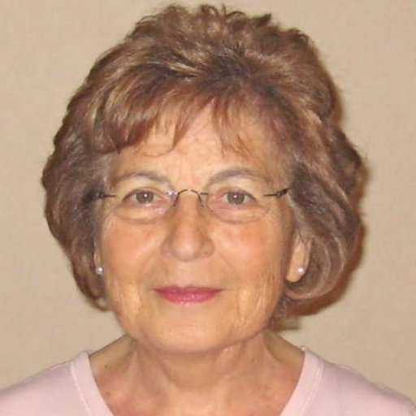
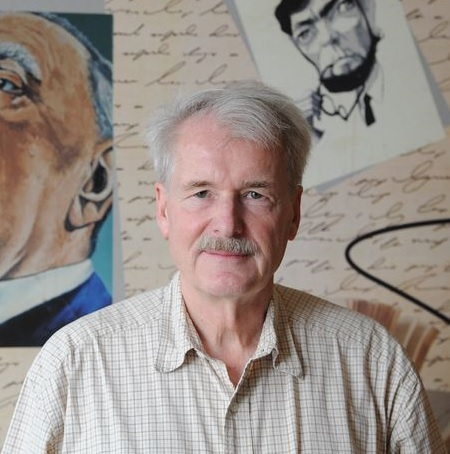
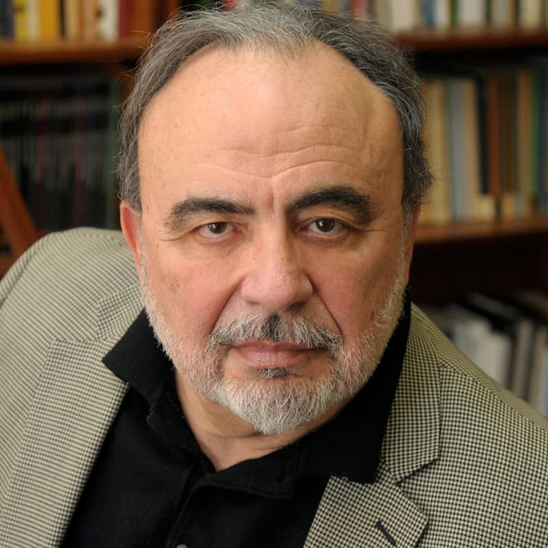

Documental
Con el objeto de ahondar en la obra de Jorge Luis Borges, en su impacto y sus implicancias en la literatura latinoamericana.
Desarrollé un documental aunando a las mayores autoridades del mundo sobre el universo literario borgeano.
El objetivo asimismo era poder entrevistar a los principales críticos de su obra para poder sumergirme en nuevos niveles de interpretación y análisis. Todos ellos accedieron a participar en este proyecto en forma pro bono (ad honorem) porque entendieron que los fines del mismo se condecían con sus propios principios.

Doctora en Literatura Latinoamericana y profesora emérita y honoraria de la Universidad de Londres, crítica literaria, primera de su clase, experta en feminismo y en la obra de Jorge Luis Borges.
Ver entrevista →
Doctor en Literatura Comparada y profesor emérito y honorario de la Universidad de Pittsburgh, es el presidente de la Borges Center y dirige su revista Variaciones Borges. Es considerado el mayor experto en la obra borgeana.
Ver entrevista →
Doctor en Lenguas Románicas y profesor emérito y honorario de la Universidad de Yale, fue electo a la American Academy of Arts and Sciences, y en el 2011, Barack Obama le confirió la Medalla Nacional de Humanidades.
Ver entrevista →